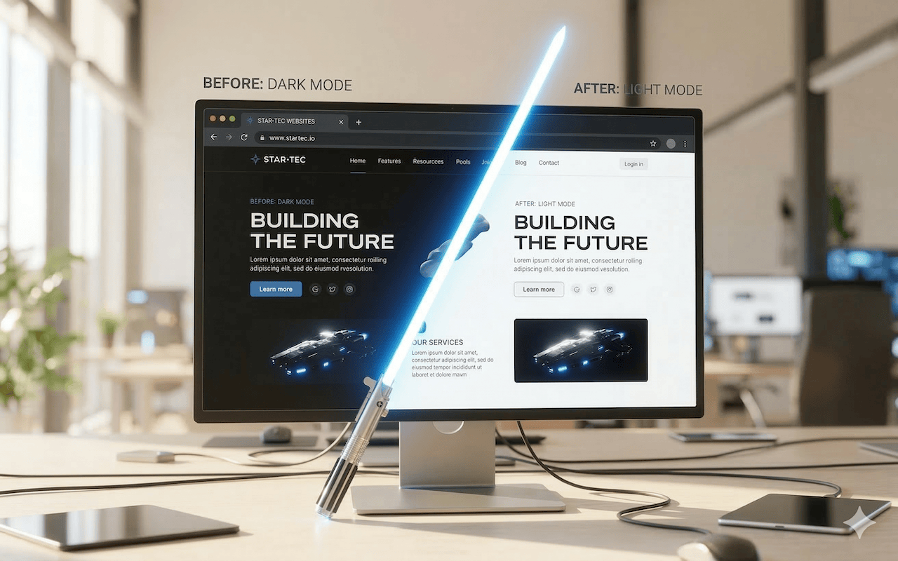

Dark or Light, Site by Site
A lightweight browser extension for controlling website appearance. Follow your system, preserve site design, force dark mode, or force light mode globally and override individual domains when needed.
Control Appearance Per Domain
Set a global default, then give any website its own rule.

Four Modes
Follow System, Preserve Site Design, Force Dark, and Force Light are available as global defaults and per-site overrides.
Domain Rules
Give each website its own appearance mode, including optional subdomain matching.
Better Dark Mode
Dark Light prefers native site themes first, then applies conservative fixes for stubborn light areas.